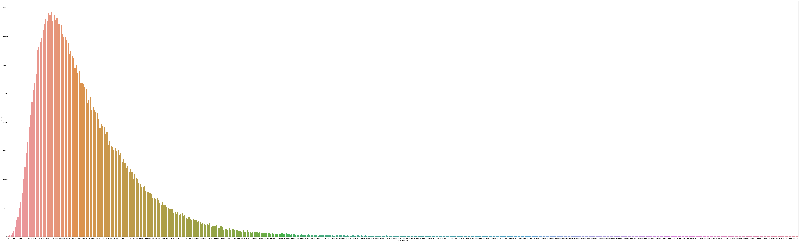
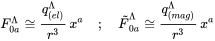

Python and JS tools for generating Printed Latex Dataset (images of tex formulas with labels) via parsing Cornell's KDDCUP. Also see KDDCUP paper.
Note: parsing for ArXiv, Wikipedia, and Stackexchange sources are coming.
Note: One can use any .tar files with LaTeX formulas to parse, need to manually add it to the folder.
How to Generate Dataset
The easiest way to generate data is via Jupyter Notebook Data generation.ipynb located in folder Jupyter Notebooks/. See section Generate using Jupyter Notebook Example for step-by-step instructions.
Final outputs are located in Data folder.
Final outputs:
- folder
generated_png_images containing PNG images
corresponding_png_images.txt each new line contains PNG images filename for the folder generated_png_imagesfinal_png_formulas.txt each new line contains a corresponding LaTeX formula- folder
raw_data containing raw downloaded data
- folder
temporary_data containing formulas from various stages of processing and SVG images generated along the way
Generate using Jupyter Notebook Example
Step 1: Notebook Initialization
Navigate to the Jupyter Notebooks/ directory and open the provided notebook. Execute all cells except for the function:
Generate_Printed_Tex(download_tex_dataset=False,
generate_tex_formulas=False,
number_tex_formulas_to_generate=1,
generate_svg_images_from_tex=False,
generate_png_from_svg=False)
We will invoke this function in subsequent steps with different flags.
Step 2: Dataset Download
Use the Generate_Printed_Tex function to download the LaTeX dataset. Currently, the default is the KDD CUP dataset. However, you can specify URLs to any LaTeX-containing .tar files in the configs.py.
Set only the download_tex_dataset=True flag, leaving the others set to False.
Step 3: Extract LaTeX Formulas
With the dataset in place, process and extract LaTeX formulas:
Set only the generate_tex_formulas=True flag and ensure all other flags are set to False.
Note: If number_tex_formulas_to_generate is less than 1001, only one .tar file will be parsed. For values greater than or equal to 1001, all downloaded .tar files will be processed.
Step 4: Convert LaTeX to SVG
To convert preprocessed LaTeX formulas into SVG format:
- Navigate to the
tex_to_svg.py file.
- Modify the constants:
MAX_NUMBER_TO_RENDER = 500*1000 (determines the maximum number of SVG LaTeX formulas to render)THREADS = 8 (set to the number of CPU cores, ensure it's less than the total available cores on your system)
- Then, run the
Generate_Printed_Tex function with the generate_svg_images_from_tex=True flag.
Step 5: Convert SVG to PNG
Finally, transform the SVG images into PNG format:
- Before initiating the process, ensure you have
Inkscape installed and accessible via the command line for MacOS. For Linux, the process will use librsvg2.
- Visit the
svg_to_png.py file and adjust the parameters:
THREADS = 7 (set this to a value less than your available CPU cores)PNG_WIDTH = 512PNG_HEIGHT = 64
- Invoke the
Generate_Printed_Tex function with the generate_png_from_svg=True flag to start the conversion.
Running it will output all the data in Data folder.
Final outputs:
- folder
generated_png_images containing PNG images
corresponding_png_images.txt each new line contains PNG images filename for the folder generated_png_imagesfinal_png_formulas.txt each new line contains a corresponding LaTeX formula- folder
raw_data containing raw downloaded data
- folder
temporary_data containing formulas from various stages of processing and SVG images generated along the way
Generated Dataset im2latex 230k
You can download a prebuilt dataset 230k from here.
Some Dataset im2latex 230k Characteristics:
- images are of varying sizes with maximum Height of 431 and maximum Width of 6816
- sizes of formulas vary from 6 to 970 (tokenized length) with distribution below

comes with a vocabulary 230k.json of size 579, which was generated on a bigger Dataset of around 330k
sample image:

Note: This code is very ad-hoc and requires tinkering with the source
Dependencies
- Tested with Python 3.9.7 and Anaconda version 2021.11
pip install opencv-pythonpip install smart_open- For Tex to SVG see:
sudo apt install nodejs npmsudo npm install --global mathjax-node-cli
- For SVG to PNG:
Contents
Printed_Tex.py - Main moduledownload_data_utils.py - Contains tools for downloading tex tars and unpacking and parsing them.configs.py - Contains Paths and command line script commands.third_party/ - Contains Katex for parsing LaTeX formulaspreprocess_formulas.py and preprocess_formulas.js - Collection of tools for handling and parsing LaTeX formulassvg_to_png.py - Functions to convert LaTeX formulas to SVG images using MathJaxpng_to_svg.py - Functions to convert SVG images formulas to PNG images using inkscape for (Darwin) MacOS and rsvg-convert for all other systems.Data/ - Contains generated_png_images/ folder, corresponding_png_images.txt, and final_png_formulas.txt. Also temporary folder temporary_data (formulas for various stages of processing and generated SVG images) and raw_data where raw data is downloaded.Jupyter Notebooks - Contains examples of generating data using Jupyter notebooks
Idea is based on https://github.com/Miffyli/im2latex-dataset